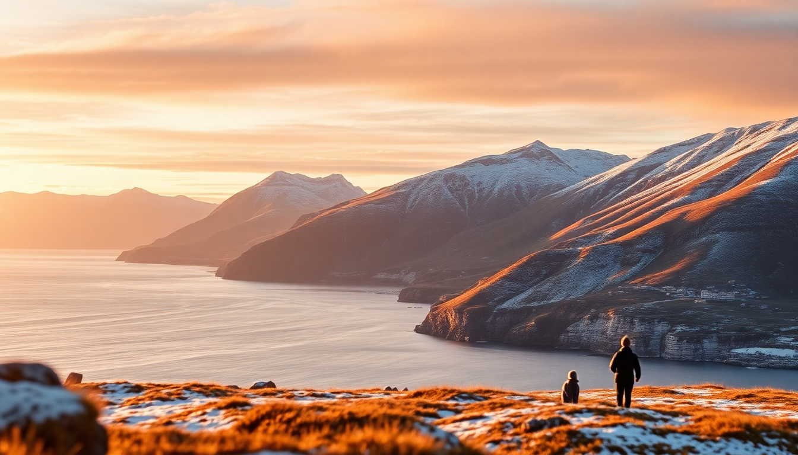

Best Day Trips from Tromsø: Fjords, Northern Lights & Reindeer

I spent a week based in Tromsø last February, and the biggest surprise wasn’t the Northern Lights—it was how many solid day trips you can do without needing a rental car or a second mortgage. Most visitors treat Tromsø as a one-stop base, and that’s smart. Here’s what I actually did, what I’d skip, and where to point your time.
What are the best fjord cruises from Tromsø?
The quickest fjord fix is the Tromsø Fjord Cruise by boat, which runs daily from the harbor near Skansen. It’s a 4-hour loop through Kaldfjorden and Ersfjorden, and you’ll see steep snow-covered walls dropping straight into black water. I booked through GetYourGuide, and the boat had heated indoor seating—critical when it’s -12°C.
- Tromsø Fjord Cruise – 4 hours, leaves from Storgata pier, includes hot drinks
- Sailing to Sommarøy – 3-hour drive or bus from Tromsø, white-sand beaches in summer, but honestly a bit quiet for winter
- Lyngen Fjord – 1.5-hour drive east, deeper fjord, fewer crowds, but you need a car or a guided minibus tour
If you only have time for one, do the Tromsø Fjord Cruise. It’s efficient and the captain pulls close to seal colonies near Grøtfjord. I saw two eagles on my trip.
Can you see the Northern Lights on a day trip from Tromsø?
Yes, but not by staying in the city. Tromsø itself has too much light pollution. Every Northern Lights tour I saw—and I took two—heads out of town. The best operators run minibuses to Ersfjordbotn or Kvaløya where the sky is dark by 6 PM in winter.
- Chase tours – These drive to wherever the cloud cover is thinnest. We ended up near Skibotn one night, 90 minutes east
- Camp-style tours – Fixed location with a lavvu (Sami tent), hot soup, and waiting. I tried Camp Tamok—it was fine, but the lights didn’t show that night
- Self-drive option – Rent a car and head to Balsfjord. I did this one night and saw a decent display around 10 PM. No guide, no guarantee, but cheaper
The chase tours are better. Guides use real-time aurora forecasts and know which valleys block wind. My guide from Chasing Lights had a tablet with live satellite data. We saw green curtains for 20 minutes near Lakselvbukt.
Where can you feed reindeer near Tromsø?
Reindeer are not just photo props—they’re central to Sami culture. The most accessible spot is Camp Tamok, about 75 minutes from Tromsø by shuttle. You feed the herd by hand (they’re gentle, but their tongues are rough), then sit inside a lavvu for a traditional Sami lunch of bidos (reindeer stew).
- Camp Tamok – Half-day tour, includes reindeer feeding, Sami storytelling, and a short sled ride
- Mikkelborg Reindeer Farm – Smaller operation near Lyngseidet, 2 hours from Tromsø. More intimate, fewer crowds
- Sami Siida – A cultural center in Karasjok, but that’s a full-day drive—skip unless you’re road-tripping north
I preferred Camp Tamok for logistics. The shuttle picked me up at Scandic Ishavshotel at 9 AM and had me back by 3 PM. The reindeer stew was genuinely good—rich, salty, served with flatbread.
Are the Lyngen Alps worth a day trip?
If you ski or snowshoe, absolutely. If you just want a view, the Lyngen Alps are dramatic but hard to reach without a car or a guided tour. The peaks rise straight from the fjord, and in February they’re plastered in white. I joined a snowshoe hike from Lyngseidet that cost about 1,200 NOK per person.
- Guided snowshoe tour – 6 hours, includes gear and lunch, moderate fitness required
- Ski touring – Advanced only. Avalanche risk is real. Hire a guide from Tromsø Outdoor
- Scenic drive – Take the E8 to Sørkjosen, then the E6 south. It’s 2.5 hours one way, but the road is well-plowed
The snowshoe tour was my favorite day. We stopped at a cabin called Gorsabruhytta for coffee and waffles. The guide pointed out ptarmigan tracks in the snow. If you’re not active, skip the Alps—the views from the fjord cruise are enough.
What’s the best way to visit Tromsdalen and the Arctic Cathedral?
Tromsdalen is the neighborhood across the bridge from downtown Tromsø. The Arctic Cathedral (formally Tromsdalen Church) is the big triangular building you see in every postcard. It’s a 20-minute walk from the city center over the Tromsø Bridge, or a 5-minute bus ride.
- Arctic Cathedral – Open daily, 50 NOK entry. The stained-glass window on the east wall is the highlight
- Fjellheisen Cable Car – Takes you up Mount Storsteinen for a panoramic view of the city and fjords. I went at sunset—worth the 320 NOK round trip
- Tromsø Bridge – Pedestrian-friendly, but windy. Hold the railing
The cathedral itself is small. I spent 20 minutes inside. The cable car is better—the view from the top shows the entire island layout and the Lyngen Alps in the distance. There’s a cafe at the top station with decent coffee and cinnamon buns.
Should you do a whale-watching day trip from Tromsø?
Whale-watching in winter is a specific thing here: orca and humpback whales follow herring into the fjords. The season runs November to January, so if you’re visiting in February or later, you’re too late. I arrived in February and missed it entirely.
- November–January – High season for whale sightings in Kaldfjorden and Skjervøy
- February–March – Whales have moved north. Focus on Northern Lights instead
- Tour operators – Brim Explorer runs silent electric boats. Tromsø Safari does smaller groups
If you’re here in December, book a whale tour early. They sell out weeks ahead. I heard from a hotel receptionist that the best sightings were near Skjervøy, about 2 hours north by boat.
What’s a good food stop on a day trip from Tromsø?
Most day trips include lunch, but if you’re self-driving, plan your own. Fiskekompaniet in Tromsø is overpriced and touristy—I’d skip it. Instead, stop at Kafe Knerten in Ersfjordbotn for fish soup and fresh bread. It’s a small yellow house near the water, and the owner makes the soup from scratch.
- Kafe Knerten – Fish soup, 190 NOK. Open 11 AM–4 PM, closed Sundays
- Hildr in Tromsø – Nordic tapas, good for dinner after a day trip. The reindeer tartare is excellent
- Bardus Bistro – Casual, local beer selection, burgers with reindeer meat
For a quick lunch on the road, stop at Eurospar in Storsteinnes for pre-made sandwiches and hot coffee. It’s not glamorous, but it’s cheap and fast.
FAQ
Is it worth renting a car for day trips from Tromsø? Yes, if you’re comfortable driving on snow and ice. Roads are well-maintained but narrow. I rented from Avis at the airport and paid about 800 NOK per day including insurance. You’ll have more flexibility for Northern Lights chasing and fjord stops, but you miss the guide’s knowledge about local conditions.
How do I book day trips from Tromsø without a car? Use GetYourGuide or Visit Tromsø for packaged tours. Most include hotel pickup from central hotels like Clarion Collection Aurora or Radisson Blu. I booked my fjord cruise and reindeer tour through GetYourGuide—both included pickup and drop-off.
What should I wear for a winter day trip from Tromsø? Layers. Thermal base, fleece mid-layer, windproof shell. Waterproof boots with good grip—I wore Sorel Caribou boots and never slipped. Gloves, hat, and a buff are mandatory. The guides provide thermal suits for snowmobile or sled tours, but you still need your own base layers.
Conclusion
- Book a fjord cruise for the most efficient scenery—4 hours, warm cabin, seals and eagles
- Join a Northern Lights chase tour instead of a fixed camp—better odds of seeing the lights
- Feed reindeer at Camp Tamok for a half-day cultural experience that includes a real Sami meal
- Skip the Lyngen Alps unless you’re skiing or snowshoeing—the fjord cruise gives you 80% of the view
- Plan whale-watching only if visiting November–January—after that, the whales are gone